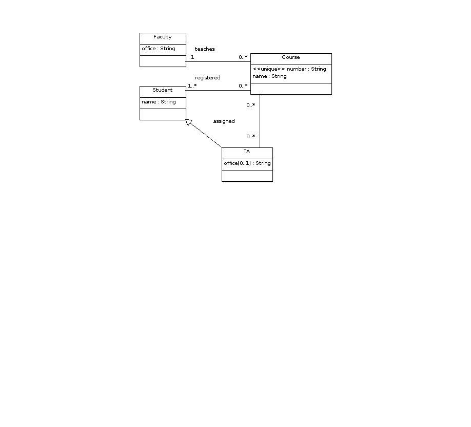

create table Faculty( id int primary key, office varchar(255) not null ); create table Course( id int primary key, number varchar(255) not null unique, name varchar(255) not null, taughtBy int not null, foreign key(taughtBy) references Faculty(id) on update cascade on delete no action ); create table Student( id int primary key, name varchar(255) not null ); create table TA( id int primary key, office varchar(255), foreign key(id) references Student(id) on update cascade on delete cascade ); create table assigned( ta int, foreign key(ta) references TA(id) on update cascade on delete cascade, course int, foreign key(course) references Course(id) on update cascade on delete cascade, primary key(ta, course) ); create table registered( student int, foreign key(student) references Student(id) on update cascade on delete cascade, course int, foreign key(course) references Course(id) on update cascade on delete cascade, primary key(student, course) ); -- The following is not required: alter table Course add foreign key(id) references registered(course) on update no action on delete no action;
© 2010 Ken Baclawski. All rights reserved. Redistribution and use in source and binary forms, with or without modification, are permitted provided that redistributions and uses retain this copyright notice.